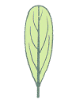
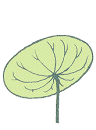
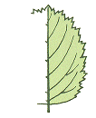
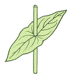

15
Sep
栃木花暦
葉と茎
+ 葉と茎から見分ける
| 分類 | 説明 | |
| 1 | 寄生・水生・海岸の野草 体に葉緑素のない種類（ヤッコソウほか）、水の中に生える種類（スイレンほか）、砂浜や岩の上に生える種類（ハマオモトほか）など、一風変わった野草や、特殊な環境に生える野草。 |
|
| 2 | 双子葉の野草Ⅰ 茎がつるになって巻きつく種類（ヒルガオほか）、茎が地面をはう種類（チドメグサほか）、葉が根生する種類（タンポポほか）、多肉質の野草（スベリヒユほか）、葉が輪生する野草（ヤエムグラほか）。 |
|
| 3 | 双子葉の野草Ⅱ 双子葉の野草のうち、葉のへりがなめらかな種類（ハハコグサほか）、へりに鋸歯のある種類（ホタルブクロほか）、へりが切れ込んでいる種類（フクジュソウほか）。 |
|
| 4 | 双子葉の野草Ⅲ 双子葉の野草のうち、葉が複葉の種類（ワレモコウほか）と、葉が対生（茎や枝の両方に葉が対になってつく）する種類（リンドウほか）。 |
|
| 5 | 単子葉の野草Ⅰ イネ科やカヤツリグサ科、イグサ科、ホシクサ科など、単子葉の野草のうち、葉の幅が細い種類。 |
|
| 6 | 単子葉の野草Ⅱ 美しい花をつけるラン科の野草（ナゴランほか）やユリ科の野草（カタクリほか）を中心に、幅の広い葉をつける単子葉の野草。 |
|
| 7 | 樹木 葉の形と幹が立っているか、つるになっているかから見極めて行こう。 |
|
| 8 | シダ 葉の姿や形が美しく、不思議な魅力を持っている。 |
| 野草検索図鑑は植物の姿（草と木）と葉の形などから名前がわかるように工夫されています。そのため、名前のわかっている植物や、名前から植物の姿を知りたいと思ったときには、引きにくくなっています。そのときには、第１巻の総さくいんから掲載ページを引き出していただくか、科名の分類表から、目指す植物が、どの巻に収録されているかを調べることができます。 |
+ 葉の各部名称
| ようしん | ようみゃく（そくみゃく、ちゅうおうみゃく） | ようへい | たくよう | みっせん |
| 葉身 | 葉脈 （側脈、中央脈） |
葉柄 | 托葉 | 蜜腺 |
+ 葉の付き方による分類
| ごせい | たいせい | りんせい | ナズナ型 | タンポポ型 |
| 互生 | 対生 | 輪生 | 根生(根出) | 根生(根出) |
 |
+ 葉の形
|  | |||||
| いとじょう | しんけい | せんけい | こうせんけい | ひしんけい | とうひしんけい |
| 糸状 | 針形 | 線形 | 広線形 | 皮針形 | 倒皮針形 |
| ちょうだえんけい | だえんけい | らんけい | とうらんけい | へらがた | りょうらんけい |
| 長だ円形 | だ円形 | 卵形 | 倒卵形 | へら形 | 菱卵形 |
|  | |||||
| しんけい | とうしんけい | えんけい | へんえんけい | じんけい | たてじょう |
| 心形 | 倒心形 | 円形 | 扁円形 | 腎形 | 楯状 |
+ 葉先の形
| えいせんとう | えいとう | どんとう | えんとう |
| 鋭尖頭 | 鋭頭 | 鈍頭 | 円頭 |
| おうとう | とつとう | びじょう | |
| 凹頭 | 凸頭 | 尾状 |
+ 基部の形
| ぜんえいせんけい | くさびけい | せっけい | しんけい |
| 漸鋭尖形 | くさび形 | 切形 | 心形 |
| みみがた | やじりがた | ほこがた | |
| 耳形 | 矢じり形 | ほこ形 |
+ 葉のふちの形(単葉)
| ぜんえん | きょし | ||||
| 全縁 | 鋸歯 | ||||
|  | |||||
| ぜんえん | はじょうえん | どんきょしえん | きょしえん | しがえん | じゅうきょしえん |
| 全縁 | 波状縁 | 鈍鋸歯縁 | 鋸歯縁 | 歯牙縁 | 重鋸歯縁 |
| 切れこみ | |||||
| せんれつ | ちゅうれつ | しんれつ | ぜんれつ | とうだいうれつ | けっこく |
| 浅裂 | 中裂 | 深裂 | 全裂 | 頭大羽裂 | 欠刻 |
+ 葉のつきかた
| ようへい | えんちゃく | |
| 葉柄 の ない | 葉柄 の ある | 沿着（茎に流れる） |
|  | ||
| 茎を抱く | つきぬき | |
+ 複葉のいろいろ
 |
||
| ３出 | ２回３出 | ３回３出 |
| ぐうすううじょう | きすううじょう | きすううじょう |
| 偶数羽状 | 奇数羽状 | ２回奇数羽状 |
| きすううじょう | とりあしじょう | しょうじょう |
| ３回奇数羽状 | 鳥足状 | 掌状 |


美しい花を見ると、満された気持ちになります。(^_^)v